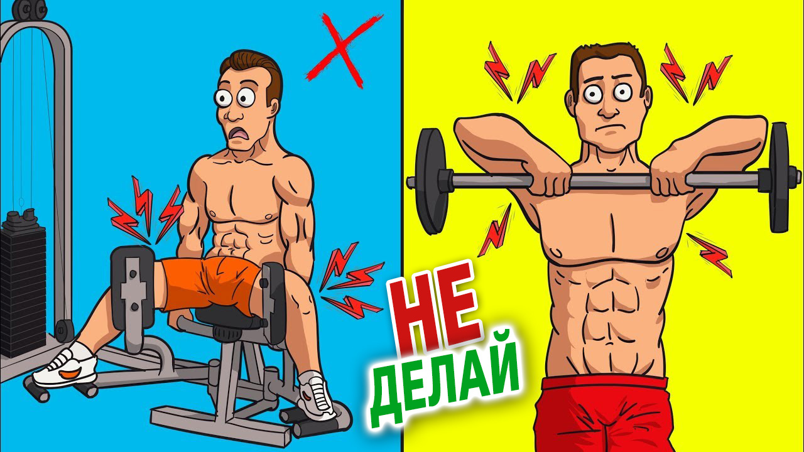

Заходите на новый сайт: www.MassaClub.com
За последнее время youtube-канал "Масса" заметно "вырос".
И возникла необходимость обзовестись новым красивым адресом :) Такие дела :)
Планируется поддержка только нового сайта.
Главная страница
За последнее время youtube-канал "Масса" заметно "вырос".
И возникла необходимость обзовестись новым красивым адресом :) Такие дела :)
Планируется поддержка только нового сайта.
Лучшая ФУЛБОДИ программа тренировок для НАБОРА МАССЫ (тренировка «B»)
Лучшая ФУЛБОДИ программа тренировок для НАБОРА МАССЫ (тренировка «B»). Фулбоди - одна из лучших программ тренировок для набора массы и развития силы. Вне зависимости от уровня подготовки. Для тех, кто не знает, это видео, про Тренировку «B», является продолжением прошлого видео. Научно-обоснованной Фулбоди тренировки «А». Разработанная фулбоди программа подразумевает сочетание тренировок в течение недели, так… Чтобы чередовать обе тренировки, «A» и «B». И выполнять в общей сложности 3 Фулбоди тренировки в неделю. И так же, как и с тренировкой «A», не забудь посмотреть видео до конца. Ведь я предоставлю тебе для скачивания полностью бесплатный PDF с тренировкой, которым сможешь воспользоваться в зале. Итак, без лишних слов, давай посмотрим, как собственно выглядит тренировка «B». Первым и самым тяжелым упражнением этой тренировки будет становая тяга. Со штангой. Это упражнение будет направлено на весь задний мышечный каркас. Прежде всего бицепсы бедер, ягодицы и другие различные мышцы, образующие спину. И хотя здесь показана традиционная тяга, как было рассмотрено в моем видео о лучших видах становой, можешь свободно попробовать и другие варианты становой. Чтобы найти то, что тебе больше нравится.
Независимо от того, какой вариант ты выберешь, тем не менее, крайне важно, чтобы ты выполнял любую становую тягу на этой тренировке. Так как в исследовании 2015 года из журнала «Исследования силы и выносливости» показано, что «Активация мышц нижней части задней поверхности бедра максимальна в упражнениях, с нагрузкой смещенной ближе к коленям». Как в сгибании ног лежа, которые мы делали на тренировке «A». В то время, как активация мышц верхней части задней поверхности максимальна в упражнениях, с большей нагрузкой ближе к тазу. Как в становой тяге.
Подробнее
Итак, без лишних слов, давай посмотрим, как собственно выглядит тренировка «B». Первым и самым тяжелым упражнением этой тренировки будет становая тяга. Со штангой. Это упражнение будет направлено на весь задний мышечный каркас. Прежде всего бицепсы бедер, ягодицы и другие различные мышцы, образующие спину. И хотя здесь показана традиционная тяга, как было рассмотрено в моем видео о лучших видах становой, можешь свободно попробовать и другие варианты становой. Чтобы найти то, что тебе больше нравится.
Независимо от того, какой вариант ты выберешь, тем не менее, крайне важно, чтобы ты выполнял любую становую тягу на этой тренировке. Так как в исследовании 2015 года из журнала «Исследования силы и выносливости» показано, что «Активация мышц нижней части задней поверхности бедра максимальна в упражнениях, с нагрузкой смещенной ближе к коленям». Как в сгибании ног лежа, которые мы делали на тренировке «A». В то время, как активация мышц верхней части задней поверхности максимальна в упражнениях, с большей нагрузкой ближе к тазу. Как в становой тяге.
Подробнее
5 способов СНЯТЬ БОЛЬ в мышцах. И УСКОРИТЬ восстановление! КРЕПАТУРА после тренировки
5 способов СНЯТЬ БОЛЬ В МЫШЦАХ (мгновенно). КРЕПАТУРА после тренировки! Держишься за оба перила, когда поднимаешься по лестнице. Или ты с трудом можешь дотянуться рукой до головы, чтобы причесаться. Или, что еще хуже, пытаешься ухватиться за что-нибудь, когда присаживаешься в туалете. Причина всегда все та же – болят мышцы. И пусть даже, мы можем попытаться перетерпеть и игнорировать боль, которую ощущаем, восстанавливаясь после очень тяжелой тренировки, боль в мышцах может действительно мешать нам в жизни. Когда тебе действительно больно, ты теряешь функциональность в простых повседневных задачах, не только когда нужно сесть или встать, но также, ты откладываешь следующую интенсивную тренировку. Ведь тебе приходиться увеличивать количество дней отдыха, чтобы полностью восстановиться. И разумеется, это может замедлить твой прогресс. Потому что частота тренировок или количество дней в неделю, когда можешь еще раз нагрузить уже восстановившуюся мышцу, является очень важным фактором, влияющим на твой результат в целом.
И даже если заставишь себя тренироваться, при наличии боли в мышцах, очень высока вероятность, что ты не сможешь заниматься с достаточно высокой интенсивностью. А это усложнит задачу соблюдения прогрессии нагрузок на тренировках. Опять таки, замедляя твой прогресс. Поэтому, в сегодняшнем видео, я хочу рассказать о пяти лучших способах, как снять боль в мышцах максимально быстро. Чтобы ты мог вернуться к жизни и не чувствовать себя инвалидом. И мог проводить с максимальной эффективностью все тренировки.
Подробнее
Когда тебе действительно больно, ты теряешь функциональность в простых повседневных задачах, не только когда нужно сесть или встать, но также, ты откладываешь следующую интенсивную тренировку. Ведь тебе приходиться увеличивать количество дней отдыха, чтобы полностью восстановиться. И разумеется, это может замедлить твой прогресс. Потому что частота тренировок или количество дней в неделю, когда можешь еще раз нагрузить уже восстановившуюся мышцу, является очень важным фактором, влияющим на твой результат в целом.
И даже если заставишь себя тренироваться, при наличии боли в мышцах, очень высока вероятность, что ты не сможешь заниматься с достаточно высокой интенсивностью. А это усложнит задачу соблюдения прогрессии нагрузок на тренировках. Опять таки, замедляя твой прогресс. Поэтому, в сегодняшнем видео, я хочу рассказать о пяти лучших способах, как снять боль в мышцах максимально быстро. Чтобы ты мог вернуться к жизни и не чувствовать себя инвалидом. И мог проводить с максимальной эффективностью все тренировки.
Подробнее
Лучшая ФУЛБОДИ программа тренировок для НАБОРА МАССЫ (тренировка «А»)
Лучшая ФУЛБОДИ программа тренировок для НАБОРА МАССЫ (тренировка «А»). Фулбоди - одна из лучших программ тренировок для набора массы и развития силы. Вне зависимости от уровня подготовки. Фулбоди не только позволяет оптимизировать частоту тренировок и восстановление в течение недели, но также рационально использует время. Ведь требует лишь трех тренировок в неделю. Однако, чтобы получить максимальную пользу от фулбоди, тебе необходимо должным образом задействовать все основные группы мышц на каждой тренировке. И делать это нужно сбалансировано. Чтобы со временем твои мышцы росли и укреплялись пропорционально. Это не только приведет к формированию более эстетичного телосложения, но и минимизирует риск появления травм. Поэтому в этом видео я покажу, как именно это сделать, основываясь на современной научной литературе и понимании анатомии тела. Но сперва, просто для ясности замечу, что эта фулбоди программа подразумевает три тренировочных дня в неделю. Мы будем чередовать две разные фулбоди тренировки таким образом…
Тренировка A будет показана в этом видео, а тренировка B будет рассмотрена в следующем выпуске. Каждая тренировка будет состоять преимущественно из базовых упражнений и набора различных дополнительных, во избежание какого-либо мышечного дисбаланса. И не забудь посмотреть видео до конца. Ведь я предоставлю тебе для скачивания полностью бесплатный PDF с тренировкой. Чтобы в следующий раз, когда пойдешь в зал, ты точно знал, что делать.
Итак, без лишних слов, давай посмотрим, как может выглядеть оптимальная фулбоди тренировка. Первое упражнение - жим штанги лежа. И это будет твоим главным упражнением для грудных мышц на этой тренировке. Жим будет отвечать за увеличение значительной части общего объема и толщины груди, с течением времени. А именно, из-за горизонтального положения скамьи в жиме, акцент будет на грудино-реберной части, то есть среднем пучке. А также будут тренироваться плечи и трицепсы. Поэтому, когда делаешь это упражнение, тебе нужно действительно почувствовать работу этих выделенных мышц. Причем наибольшая нагрузка должна ощущаться на грудных.
Подробнее
Это не только приведет к формированию более эстетичного телосложения, но и минимизирует риск появления травм. Поэтому в этом видео я покажу, как именно это сделать, основываясь на современной научной литературе и понимании анатомии тела. Но сперва, просто для ясности замечу, что эта фулбоди программа подразумевает три тренировочных дня в неделю. Мы будем чередовать две разные фулбоди тренировки таким образом…
Тренировка A будет показана в этом видео, а тренировка B будет рассмотрена в следующем выпуске. Каждая тренировка будет состоять преимущественно из базовых упражнений и набора различных дополнительных, во избежание какого-либо мышечного дисбаланса. И не забудь посмотреть видео до конца. Ведь я предоставлю тебе для скачивания полностью бесплатный PDF с тренировкой. Чтобы в следующий раз, когда пойдешь в зал, ты точно знал, что делать.
Итак, без лишних слов, давай посмотрим, как может выглядеть оптимальная фулбоди тренировка. Первое упражнение - жим штанги лежа. И это будет твоим главным упражнением для грудных мышц на этой тренировке. Жим будет отвечать за увеличение значительной части общего объема и толщины груди, с течением времени. А именно, из-за горизонтального положения скамьи в жиме, акцент будет на грудино-реберной части, то есть среднем пучке. А также будут тренироваться плечи и трицепсы. Поэтому, когда делаешь это упражнение, тебе нужно действительно почувствовать работу этих выделенных мышц. Причем наибольшая нагрузка должна ощущаться на грудных.
Подробнее
10 ошибок при НАБОРЕ МАССЫ. Они мешают НАКАЧАТЬСЯ!
Набор массы могут сопровождать ошибки, которых можно избежать и, как результат, накачаться быстрее. Я потратил годы, пытаясь набрать массу натурально. И для начала, позволь мне сказать, что это непросто. Очень много ложной информации о том, как накачаться натурально. И информации так много, что даже если найдешь правильную, очень легко запутаться и продолжить бездействовать. Я ощутил это на собственном опыте, проходя разные этапы, когда моей целью был сугубо набор массы как можно больше. И другие этапы, когда я хотел быть «сухим», на столько, на сколько возможно. За годы прохождения грязных и сухих наборов, этапов жиросжигания, пробуя разные пищевые добавки, а также постоянно меняя свой план тренировок, я сделал множество проб и ошибок. И я хочу, чтобы ты не допустил те же ошибки, что и я. Чтобы ты мог увидеть результаты как можно быстрее, сосредоточившись на действительно важных вещах, игнорируя ненужное, когда речь идет о наборе массы. И сегодня я хочу рассказать о самых больших ошибках, которые ты, возможно, делаешь, пытаясь накачаться. И которые мешают тебе увидеть рост мышц и результаты, которые ты заслуживаешь. Давай перейдем к делу и начнем с наибольшей ошибки на тренировках, которую делают новички и продвинутые люди. Работа всегда в одном и том же диапазоне повторений. Есть число повторений, которое считается лучшим для набора массы. И хотя есть много споров о том, какой диапазон лучше всего, большинство людей согласятся, что он находится где-то между 6 и 12 повторениями. Лучшие результаты, которые я замечал, всегда были в более узком диапазоне, примерно от 5-6 до 8 повторений. Однако, если будешь постоянно тренироваться в одном и том же диапазоне, то возникнет много проблем с прогрессом. Особенно когда ты продвинешься выше уровня новичка, а рост результатов начнет замедляться. Вот почему тебе нужно применять три разных диапазона повторений. Низкий, средний и высокий. Твой средний диапазон может составлять от шести до восьми повторений. Твой низкий может быть от 3 до 4. А высокий диапазон повторений может составлять 12-15. ПодробнееКак ИСПРАВИТЬ ОСАНКУ быстрее! Упражнения ОТ СУТУЛОСТИ
Как ИСПРАВИТЬ ОСАНКУ быстрее! Упражнения для осанки (от сутулости). Если твоя осанка сейчас больше напоминает фото слева. И тебе безумно хочется, чтобы она была больше похожа на фото справа и побыстрее. Тогда ты оказался в правильном месте. Опущенные вперед плечи, как в позе, которую я демонстрирую здесь, это ровно то, как выглядела моя осанка в студенческие годы. Ставшая все более распространенной. Зачастую она формируется из-за постоянной длительной сутулости. Или в результате несбалансированных тренировок. Фактически, в недавней статье 2017 года говориться, что у обычных тяжелоатлетов значительно более сутулые плечи, по сравнению с нетренированными людьми. Из-за различного рода дисбалансов, их тренировочных программ. И это проблема. Не только потому, что это в общем-то эстетически некрасиво. Но и потому, что это может негативно повлиять на твою способность выполнять определенные упражнения в зале. И чревато повышенным риском развития болей и травм в плечах. Но прежде чем погрузимся в рассмотрение наиболее эффективного решения, нам нужно глянуть на характерные мышечные дисбалансы, отвечающие за формирование такой осанки. И на основе анализа целого ряда статей ты с уверенностью можешь сделать вывод, что сутулость является комбинацией двух вещей. Первое. Гиперактивные мышцы, которые стали туже, тянут плечи вперед. В это положение. При чем в основном виновниками часто являются грудные мышцы и верхняя часть трапеций, в сочетание с общей недостаточной подвижностью грудного отдела. И второе. Малоактивные мышцы, которые стали слабыми, не оттягивают плечи назад в нейтральное положение. Причем основными виновниками часто оказываются середина и низ трапеций, а также передняя зубчатая мышца.И что интересно, исследования на самом деле показывают, что эти мышцы со временем ослабевают. Отчасти из-за ранее упомянутых гиперактивных мышц. Которые, фактически, изначально мешают нам задействовать эти малоактивные мышцы. ПодробнееКак НАКАЧАТЬ ЯГОДИЦЫ. 5 лучших упражнений ДЛЯ ЯГОДИЦ
Как НАКАЧАТЬ ЯГОДИЦЫ. 5 лучших упражнений ДЛЯ ЯГОДИЦ. Ягодицы - одна из важнейших мышечных групп всего тела. Без них ты не мог бы ходить, бегать или прыгать. И у тебя также был бы серьезный недостаток – плоский как блин зад. Никому не нравится плоский зад. Ни парням, ни девушкам. Так что в этом видео, я окажу всем любителям персиков на нашей планете большую услугу и дам вам, парни, пять лучших упражнений для построения красивой задницы. И если ты делаешь приседания, стараясь изо всех сил, но твои ягодицы похоже просто не растут - дай шанс этому видео. Потому что мы погрузимся в рассмотрение конкретных способов. Которые помогут тебе включить ягодицы и построить более красивый зад. Чтобы ты мог заполнить такие джинсы предельно быстро. Давай сперва начнем с того, что все знают. И это приседания со штангой. Но мы не делаем просто обычные приседания со штангой. Лучший вид приседаний для проработки ягодиц - это глубокие приседания со штангой. Опускайся мягко и низко во время приседаний. Это секрет построения хороших ягодиц. Многие люди боятся садится низко в приседаниях. Потому что есть множество мифов о том, на сколько низко позволено тебе опускаться. Правда в том, что если у тебя не было каких-либо травм коленей и у тебя правильная техника, то можешь опускаться полностью, почти до пола. Это на самом деле то, что тренеры называют «приседаниями задом до травы». А мягкое и низкое перемещение в приседаниях - очень естественное движение для твоего тела. Я всегда привожу этот пример… Но до появления у нас туалетов, нам приходилось каждый день приседать. И эти приседания естественно были глубокими. Вот почему глубокий присед - очень естественное движение, приспособиться к которому, у нашего тела было уйма времени, на протяжении всей истории. Проблема в том, что если ты не привык сидеть на корточках, то глубокие приседания покажутся совсем не естественными. Поэтому важно научиться делать это правильно. И если тебе на корточках не привычно, то сперва, лучше всего, поставить за собой подставку или платформу. И просто стоя лицом к зеркалу, садись и вставай. Садись и снова вставай. ПодробнееКак научиться ПОДТЯГИВАТЬСЯ правильно. От 0 до 10+
Если твои подтягивания сейчас выглядят и звучат примерно так... А хочешь, чтобы были такими и побыстрее, тогда ты оказался в правильном месте… Подтягивания - одно из лучших, если не самое лучшее упражнение, для увеличения силы и объема мышц, верхней части спины и рук. А также они способствуют развитию мышц кора. На самом деле, я бы даже сказал, что большая часть моей спины, построена в результате нескольких лет постоянного выполнения подтягиваний. Не говоря уже, что это также чрезвычайно целесообразное упражнение. Если учесть, что ты можешь эффективно прорабатывать мышцы спины, используя всего лишь перекладину и свой вес. Однако все имеет свою цену. Ведь подтягивания, как правило, одно из самых сложных упражнений для освоения. Фактически, большинству людей лишь предстоит выполнить свое первое подтягивание. А те, кто его уже осилили, зачастую испытывают трудности с увеличением количества повторений, которые могут выполнить. Впрочем, вероятно, ты уже пытался что-то делать, чтобы увеличить силу в упражнении или добиться своего первого подтягивания. Дело в том, что большинство людей просто используют неправильные методы. Не хочу расстраивать, но если просто делать много тяг верхнего блока и подтягиваний в гравитроне, то это не сработает. Впрочем, в этом видео я покажу, какие, согласно исследованиям, наиболее эффективные меры и планы действий, позволят тебе сделать первое подтягивание. А затем, максимально быстро, превратить количество подтягиваний в двузначное число. Первое, что тебе нужно сделать, это сосредоточиться на укреплении главных мышц, участвующих в подтягивании. А точнее, согласно исследованиям, таким, как этот ЭМГ-анализ 2018 года, наиболее активны и задействуются в подтягивании, мышцы кора, бицепсы, широчайшие, а также середина и низ трапеции. И, следовательно, являются мышцами, на которых тебе следует сосредоточиться. Поскольку, тренируя каждую из этих мышц в альтернативных тяговых упражнениях, как предлагают исследователи, ты сможешь усилить их до такой степени, чтобы они были суммарно достаточно сильными и ты мог подтянуться. Мы также косвенно повысим твою силу в подтягиваниях, если на сегодняшний день можешь выполнить лишь несколько. ПодробнееВсего 7 упражнений нужны мужчине, чтобы НАКАЧАТЬСЯ. Лучшие БАЗОВЫЕ упражнения
Всего 7 упражнений нужны мужчине, чтобы НАКАЧАТЬСЯ. Лучшие БАЗОВЫЕ упражнения для набора мышечной массы. Большинство людей ищут простое решение для быстрого и эффективного набора мышечной массы. Если говорить коротко… И я должен сказать, что нет ничего проще. Потому что, потратив много времени на набор мышечной массы натурально, я узнал, что есть ряд упражнений, которых следует полностью избегать. И другие упражнения, которые ты, возможно, захочешь выбрать. А есть упражнения, без которых просто не обойтись. Я сократил список до семи самых важных упражнений. Которые обязательно должны быть основными в твоем плане тренировок, чтобы эффективно нарастить как можно больше мышц в кратчайшие сроки. Просто выполняя эти семь ключевых базовых упражнений, ты увидишь невероятные результаты, не делая больше ничего другого в зале. И я подготовил это видео специально для мужчин не потому, что женщины не могут получить пользу от этих упражнений. А потому, что для мужчин в идеале больше подходит v-образная форма телосложения. Тогда как для женщин скорее нужна форма песочных часов. Так что, хотя многие из этих упражнений подходят как для мужчин, так и для женщин, это видео поможет тебе, прежде всего, построить наилучшее телосложение с наименьшим количеством упражнений. Сперва давай начнем с очень важного упражнения для верхней части тела. Тяга штанги в наклоне. Этим упражнением ты будешь задействовать ромбовидные мышцы, которые сводят лопатки вместе. То есть мышцы верхней части спины. А также будут работать задние дельты и бицепсы. Это одно из самых важных тяговых упражнение, которое можешь делать. Не считая становую тягу. Потому что, задействуешь множество мышечных групп, отвечающих за тяги. ПодробнееКак накачать грудь в жиме лежа. 2 лучших совета
Как накачать грудь в жиме лежа. 2 лучших совета. Хочешь накачать грудь? Делай жим на скамье... Сколько раз мы слышали: «если хочешь большую грудь - делай жим лежа». Но на самом деле это довольно хороший совет. Потому что мы знаем, что жим лежа очень эффективен для роста груди. Действительно, если посмотрим недавние статьи, в которых отслеживается сила в жиме лежа и рост груди с течением времени, то увидим сильную взаимозависимость. Это значит, что похоже, чем больше сила в жиме, тем больше грудь. Но есть загвоздка. Если внимательнее посмотрим на цифры, то на самом деле мы увидим несколько случаев. Когда, некоторые испытуемые, в отличии от остальных, могли жать значительно больший вес, при этом не особо прибавив в росте груди, чтобы демонстрировать такие результаты. Аналогично, есть другие случаи, когда два человека с одинаковой силой в жиме лежа имеют колоссальную разницу в 30%, в результатах роста груди. Это означает, что некоторые люди похоже просто не так действуют, как другие, когда нужно нарастить мышцы груди с помощью жима лежа. И поверь мне, я был одним из них. Росло все кроме моей груди. И хотя да, генетика может играть в этом определенную роль, исследования ясно показывают, что ты можешь быстро улучшить рост груди, который заметишь, тренируя в жиме лежа. Применив несколько простых советов. Только когда я наконец применил два совета, которыми сегодня с вами поделюсь, я наконец начал видеть, как моя грудь откликается на жим лежа и в результате, очень быстро растет. ПодробнееКак накачаться худому. 7 шагов к набору массы
Как накачаться худому. Если считаешь себя хардгейнером и тебе кажется, что как сильно ни старайся, ты просто не сможешь набрать больше мышц, то у тебя, вероятно, возникал вопрос: «Что ж я делаю не так?». Ты, возможно, потратил месяцы или, может быть, даже годы, пытаясь набрать массу. Но ты по прежнему худой. У тебя нет хорошо заметной мышечной массы, а большинство футболок все еще мешковаты. Особенно на руках. Предполагая, когда видишь других людей, что им это просто легче дается. Людей, которые могут не так хорошо тренироваться, или хуже питаться. Кажется, что они могут набрать массу, просто глядя на гантели. Это может действительно разочаровывать. И даже если ты настойчивый, и не сдаешься, может быть очень удобно просто нацепить на себя ярлык хардгейнера и использовать это как оправдание. Но правда в том, что ты не хардгейнер. Конечно, биология и физиология у всех разная. И конечно, тебе может быть нЕмного сложнее строить мышцы, чем другим. Но большая часть убеждений, что ты хардгейнер - это просто вымысел, который поддерживает твою худобу. На самом деле, если ты просто выполнишь семь вещей, которые я последовательно изложу, и меня не волнует, насколько ты считаешь себя хардгейнером, то ты накачаешься. Первая и самая распространенная проблема худых парней - недостаточное количество калорий. Ирония в том, что большинство людей, называющих себя хардгейнерами, думают, что тАк много едят... Но обычно это не так. Кроме того, есть люди, которые дезинформируют, утверждая, что тебе даже не нужен избыток калорий для набора массы. Что это всего лишь миф. И что тебе просто достаточно все делать правильно в зале, чтобы получить результаты. ПодробнееТренировка нижней части тела. Сплит тренировка "Верх-Низ". Упражнения для ног и ягодиц
Тренировка нижней части тела. Сплит тренировка "Верх-Низ". Упражнения для ног и ягодиц. Для тех, кто не знает, это видео является продолжением. В прошлом выпуске, о тренировке верхней части тела, я рассказал, как лучше всего организовать дни тренировок верха, сплита «Верх-Низ». Однако в этом видео, я покажу, как построить тренировки низа, опираясь на современную научную литературу и понимание анатомии мышц нижней половины тела. Прежде всего, основная задача в дни низа – тренировка должным образом квадрицепсов, задней поверхности бедра, ягодиц и икр. Это позволяет не только пропорционально расти мускулатуре нижней части тела с течением времени, но и что более важно, помогает предотвратить травмы, которые могут возникнуть из-за мышечного дисбаланса. Однако, чтобы укрепить и накачать эти мышцы, важно выбирать правильные упражнения. Поэтому, без лишних слов, давай посмотрим, как может выглядеть оптимальная тренировка нижней части тела.
Если говорить о развитии квадрицепса, то приседания будут твоим лучшим выбором. Хотя приседания также будут сильно задействовать ягодичные мышцы и безусловно будут способствовать их росту, в многочисленных исследованиях неоднократно было показано, что они, вызывают очень высокую активацию четырехглавых мышц, по сравнению с другими упражнениями для нижней части тела. И учитывая, что приседания - это упражнение, в котором можно легко и эффективно увеличивать нагрузку, я настоятельно рекомендую включить их в тренировку низа.
Что касается того, как следует выполнять приседания. Со штангой на плечах или на груди.
Я бы посоветовал делать приседания со штангой на плечах в один день тренировки нижней части тела, а затем, в другой день, выполнять со штангой на груди. Или менять их время от времени. Дело в том, что исследования показывают, что хотя «в целом активация четырехглавой мышцы в приседаниях со штангой на плечах и на груди примерно одинакова», исследования также сообщают, что «фронтальные приседания могут лучше активировать определенные пучки четырехглавых мышц. Которые не так хорошо активируются в приседаниях со штангой на плечах».
Подробнее
Прежде всего, основная задача в дни низа – тренировка должным образом квадрицепсов, задней поверхности бедра, ягодиц и икр. Это позволяет не только пропорционально расти мускулатуре нижней части тела с течением времени, но и что более важно, помогает предотвратить травмы, которые могут возникнуть из-за мышечного дисбаланса. Однако, чтобы укрепить и накачать эти мышцы, важно выбирать правильные упражнения. Поэтому, без лишних слов, давай посмотрим, как может выглядеть оптимальная тренировка нижней части тела.
Если говорить о развитии квадрицепса, то приседания будут твоим лучшим выбором. Хотя приседания также будут сильно задействовать ягодичные мышцы и безусловно будут способствовать их росту, в многочисленных исследованиях неоднократно было показано, что они, вызывают очень высокую активацию четырехглавых мышц, по сравнению с другими упражнениями для нижней части тела. И учитывая, что приседания - это упражнение, в котором можно легко и эффективно увеличивать нагрузку, я настоятельно рекомендую включить их в тренировку низа.
Что касается того, как следует выполнять приседания. Со штангой на плечах или на груди.
Я бы посоветовал делать приседания со штангой на плечах в один день тренировки нижней части тела, а затем, в другой день, выполнять со штангой на груди. Или менять их время от времени. Дело в том, что исследования показывают, что хотя «в целом активация четырехглавой мышцы в приседаниях со штангой на плечах и на груди примерно одинакова», исследования также сообщают, что «фронтальные приседания могут лучше активировать определенные пучки четырехглавых мышц. Которые не так хорошо активируются в приседаниях со штангой на плечах».
Подробнее
Протеин. Как и когда лучше принимать для набора мышечной массы. Нужен ли тебе порошковый протеин
Протеин, в виде порошка, на сегодняшний день является самой потребляемой добавкой в фитнес-индустрии. И не спроста. Это удобно, он содержит высококачественный протеин и гораздо экономически выгоднее других источников белка. И это не все. Протеин также одна из тех немногих добавок, безопасность которых, для наращивания мышечной массы и ряд других преимуществ, в значительной степени подкреплены исследованиями. Однако, несмотря на его популярность, большинство людей часто остаются неосведомленными, и не знают как выбрать лучший тип протеина. А тем более, не знают, как лучше всего использовать для набора мышечной массы. И, к сожалению, консультация с продавцом в твоем местном магазине спортивного питания, скорее всего, еще больше запутает или дезинформирует. Но, к счастью, в этом видео я все тебе проясню и покажу, как максимизировать эффективность протеина, рассмотрев каждый из этих пунктов (см. видео). Когда приходится выбрать протеин в виде порошка, то безусловно, количество вариантов, может быть непомерно огромным. Но исследования все упрощают, показывая, что сывороточный и казеиновый, по сравнению с другими порошковыми протеинами, имеют наибольшую концентрацию необходимых аминокислот. И, соответственно, лучше для стимулирования синтеза мышечного белка. А это значит, что они будут для тебя наилучшими вариантами. Теперь, что касается отличий сыворотки и казеина и что из них лучше. Основная разница заключается в их пищеварительных свойствах. Сыворотка - это быстро перевариваемый протеин, который резко ускоряет синтез белка на короткий промежуток времени. В то время как казеин представляет собой протеин, который медленнее усваивается и постепенно увеличивает синтез белка на протяжении более длительного периода времени. ПодробнееТренировка верхней части тела. Сплит тренировка "Верх-Низ". Качаем грудь, спину, руки и плечи
Когда дело доходит до выбора тренировочного сплита, для оптимизации роста мышц, приходится учитывать множество факторов. Но оптимальная частота тренировок и реалистичность времянных затрат, делают сплит «Верх-Низ» очень эффективным решением для многих атлетов. И он может быть легко адаптирован с учетом твоего опыта тренировок. В этом видео я покажу тебе, как именно организовать и выбрать упражнения для тренировок верха. Опираясь на современную научную литературу и понимание анатомии мышц верхней половины тела. Но сперва, для тех, кто не знает… Сплит «Верх-Низ» просто подразумевает разделение тренировок на дни верхней и дни нижней части тела. Которые, зачастую, выполняются каждый по 2 раза в неделю. В идеале, тебе нужно организовать сплит таким образом. И хотя, дни могут быть распределены в другом порядке, это не так важно. Лучше всего включать день отдыха после двух подряд дней тренировок, чтобы обеспечить достаточное восстановление.
Теперь, что касается лучших упражнений для включения в тренировки верхней части тела. Хороший способ сформировать сплит – опереться на следующие рекомендации. Подбор упражнений таким образом гарантирует сбалансированную работу мышц. Что позволяет избежать развития мышечного дисбаланса и помогает проработать всю мускулатуру верхней половины тела. Так что с учетом сказанного, давай посмотрим, как может выглядеть оптимальная тренировка верха.
Благодаря сгибанию плеча под большим углом в жиме гантелей на наклонной, больший акцент смещается на ключичный сегмент большой грудной. Также известный как верхняя часть груди. Которая, чаще всего, является слабым местом для большинства людей.
Подробнее
Но сперва, для тех, кто не знает… Сплит «Верх-Низ» просто подразумевает разделение тренировок на дни верхней и дни нижней части тела. Которые, зачастую, выполняются каждый по 2 раза в неделю. В идеале, тебе нужно организовать сплит таким образом. И хотя, дни могут быть распределены в другом порядке, это не так важно. Лучше всего включать день отдыха после двух подряд дней тренировок, чтобы обеспечить достаточное восстановление.
Теперь, что касается лучших упражнений для включения в тренировки верхней части тела. Хороший способ сформировать сплит – опереться на следующие рекомендации. Подбор упражнений таким образом гарантирует сбалансированную работу мышц. Что позволяет избежать развития мышечного дисбаланса и помогает проработать всю мускулатуру верхней половины тела. Так что с учетом сказанного, давай посмотрим, как может выглядеть оптимальная тренировка верха.
Благодаря сгибанию плеча под большим углом в жиме гантелей на наклонной, больший акцент смещается на ключичный сегмент большой грудной. Также известный как верхняя часть груди. Которая, чаще всего, является слабым местом для большинства людей.
Подробнее
Становая тяга. Как делать становую тягу для роста мышц. Как выполнять правильно для набора массы
Становая тяга. Как делать становую тягу для роста мышц. Как выполнять становую правильно для набора массы. Об этом рассказывает Джереми Этье в этом видео. А также об ошибках, которые ухудшают прогресс в этом мощном базовом упражнении. Если хочешь сделать верхнюю часть спины толще, подчеркнуть V-образную форму и создать визуально мощную заднюю часть тела, тогда становая тяга определенно должна быть твоим главным упражнением. Потому что, это одно из лучших базовых упражнений, помогающих развить ряд мышц, составляющих задний каркас И как показано, не только, в этом исследовании 2011 года из журнала «Исследования силы и выносливости», что становая тяга, позволяет тебе поднимать вес больше, чем в любом другом упражнении со свободным весом. Но также, исследования показывают, что это эффективный инструмент для развития взрывной силы и вертикальной прыгучести. Превращая его, как не крути, в эффективное упражнение для увеличения силы и атлетизма, которое обязательно должно быть включено в твою программу тренировок.
Однако, несмотря на, кажущуюся простоту движения, если хочешь максимизировать эффективность, одновременно уменьшив риск получения травмы, тогда становая тяга – это гораздо больше, чем просто подъем тяжести с пола.
Скорее всего, если ты не обучен достаточно хорошо правильной технике выполнения, тогда слишком велика вероятность того, что ты также делаешь с ошибками. Например, если не можешь определить хотя бы две ошибки, которые я здесь делаю, то, скорее всего, ты допускаешь одну из них. Поэтому, в этом видео я расскажу о пяти самых распространенных ошибках, которые люди допускают делая становую тягу. И более того, я сразу покажу, как их легко исправить.
Подробнее
И как показано, не только, в этом исследовании 2011 года из журнала «Исследования силы и выносливости», что становая тяга, позволяет тебе поднимать вес больше, чем в любом другом упражнении со свободным весом. Но также, исследования показывают, что это эффективный инструмент для развития взрывной силы и вертикальной прыгучести. Превращая его, как не крути, в эффективное упражнение для увеличения силы и атлетизма, которое обязательно должно быть включено в твою программу тренировок.
Однако, несмотря на, кажущуюся простоту движения, если хочешь максимизировать эффективность, одновременно уменьшив риск получения травмы, тогда становая тяга – это гораздо больше, чем просто подъем тяжести с пола.
Скорее всего, если ты не обучен достаточно хорошо правильной технике выполнения, тогда слишком велика вероятность того, что ты также делаешь с ошибками. Например, если не можешь определить хотя бы две ошибки, которые я здесь делаю, то, скорее всего, ты допускаешь одну из них. Поэтому, в этом видео я расскажу о пяти самых распространенных ошибках, которые люди допускают делая становую тягу. И более того, я сразу покажу, как их легко исправить.
Подробнее
Лучший сплит для тренировок. Какая программа лучше для набора мышечной массы
Лучший сплит для тренировок. Какая программа лучше для набора мышечной массы? Одно из важнейших решений, которое ты принимаешь, начиная тренироваться в зале, - это выбор тренировочного сплита. Или, другими словами, просто выясняешь, как будешь группировать упражнения в течение недели. Например, когда я только начинал посещать тренажерный зал, я использовал то, что было популярно в фитнес-журналах и что, как я думал, используют все в зале. Бро сплит. Который просто подразумевает тренировку каждой группы мышц один раз в неделю с большим объемом в каждой тренировке. И после нескольких лет работы в таком стиле, как можешь видеть на этой фотографии мне 18 или 19 лет и я определенно добился хорошего прогресса.
Но, оглянувшись назад со знанием, которое у меня теперь есть, возникает вопрос: действительно ли я бы прогрессировал заметно быстрее, если бы использовал другой или «лучше», чем бро сплит, план тренировок? И, честно говоря, я думаю, что вероятность этого велика. А если говорить от том, что я бы сделал иначе и рекомендовал бы тебе, давай сначала посмотрим наши варианты.
Один из популярных подходов – постоянная тренировка вместе определенных групп мышц в определенные дни. Хорошим примером является сплит «верх-низ», который подразумевает тренировку всех мышц верхней части тела в один день, а нижней – в другой. Похожая концепция у сплита «жимы-тяги-ноги». Когда, опять таки, много мышц каждый раз тренируются вместе. Еще один популярный вариант, противоположный в своей основе «бро сплиту» - это Фулбоди. Когда тренируешь все мышцы на каждой тренировке, в основном выполняя базовые упражнения
Подробнее
Например, когда я только начинал посещать тренажерный зал, я использовал то, что было популярно в фитнес-журналах и что, как я думал, используют все в зале. Бро сплит. Который просто подразумевает тренировку каждой группы мышц один раз в неделю с большим объемом в каждой тренировке. И после нескольких лет работы в таком стиле, как можешь видеть на этой фотографии мне 18 или 19 лет и я определенно добился хорошего прогресса.
Но, оглянувшись назад со знанием, которое у меня теперь есть, возникает вопрос: действительно ли я бы прогрессировал заметно быстрее, если бы использовал другой или «лучше», чем бро сплит, план тренировок? И, честно говоря, я думаю, что вероятность этого велика. А если говорить от том, что я бы сделал иначе и рекомендовал бы тебе, давай сначала посмотрим наши варианты.
Один из популярных подходов – постоянная тренировка вместе определенных групп мышц в определенные дни. Хорошим примером является сплит «верх-низ», который подразумевает тренировку всех мышц верхней части тела в один день, а нижней – в другой. Похожая концепция у сплита «жимы-тяги-ноги». Когда, опять таки, много мышц каждый раз тренируются вместе. Еще один популярный вариант, противоположный в своей основе «бро сплиту» - это Фулбоди. Когда тренируешь все мышцы на каждой тренировке, в основном выполняя базовые упражнения
Подробнее
Как накачать широкую спину быстрее. Ускоряем рост широчайших мышц
Как и у многих других посетителей зала, одной из главных целей, когда я начал тренироваться, было увеличение ширины спины. И не без оснований, ведь это помогает сформировать V-образную форму и делает талию визуально меньше. И если ты к этому стремишься, то основные мышцы, которые тебе следует развивать, это широчайшие. Увеличение этих мышц поможет тебе эффективно прибавить в ширине спины, как ты и хотел. Но, к сожалению, зачастую сделать это не так легко, как просто сесть потренить на блочном тренажере. Потому, что приличная прибавка ширины твоей спины требует больше, чем просто выполнение правильных упражнений. К счастью, если ты серьезно заинтересован сделать спину шире и как можно быстрее, есть несколько тренировочных стратегий, которые, как показывают исследования, способны значительно ускорить процесс. Я лично применил эти стратегии и к тому же, годы их применения дали результат И в этом видео именно об этом я и расскажу. Чтобы ты мог построить более широкую спину как можно быстрее.
Первое. Убедись, что сможешь максимально активировать и задействовать свои широчайшие мышцы.
Потому, что для большинства атлетов одна из самых сложных в активации мышц и работу которой трудно почувствовать, это широчайшие. Что часто приводит к смещению нагрузки на другие группы мышц, бицепсы и трапеции. И, по сути, отнимая прирост у широчайших мышц на тренировке спины.
И это плохо. Ведь мы знаем, основываясь на недавно опубликованном исследовании 2018 года, что установление сильной мысленной связи с мышцами при их тренировке, способствует росту.
Подробнее
К счастью, если ты серьезно заинтересован сделать спину шире и как можно быстрее, есть несколько тренировочных стратегий, которые, как показывают исследования, способны значительно ускорить процесс. Я лично применил эти стратегии и к тому же, годы их применения дали результат И в этом видео именно об этом я и расскажу. Чтобы ты мог построить более широкую спину как можно быстрее.
Первое. Убедись, что сможешь максимально активировать и задействовать свои широчайшие мышцы.
Потому, что для большинства атлетов одна из самых сложных в активации мышц и работу которой трудно почувствовать, это широчайшие. Что часто приводит к смещению нагрузки на другие группы мышц, бицепсы и трапеции. И, по сути, отнимая прирост у широчайших мышц на тренировке спины.
И это плохо. Ведь мы знаем, основываясь на недавно опубликованном исследовании 2018 года, что установление сильной мысленной связи с мышцами при их тренировке, способствует росту.
Подробнее
Как накачать большие ноги быстрее. Ускоряем рост квадрицепсов
Как ваши дела? С вами Джереми. И сегодня мы поговорим о квадрицепсах. В частности, почему они могут не расти, несмотря на то, что ты ходишь на тренировки ног и выполняешь все упражнения, от которых они вообще-то должны расти. Скажу честно, я сам боролся за рост своих квадрицепсов с тех пор, как начал тренироваться. При том, что я никогда не пропускал тренировки ног и в общем-то работал с тяжелыми весами. Мои квадрицепсы просто никогда особо не росли и всегда, казалось, что отстают. Но вернемся в настоящее. И хотя мои квадрицепсы все еще не такие, как хотелось бы, их развитие и темпы роста значительно улучшились. В основном из-за исправления трех ключевых ошибок, о которых ранее не подозревал. И сейчас я вижу, как другие люди тренируя ноги, все время неосознанно допускают те же ошибки. Поэтому, чтобы ты не пошел тем же путем, давай рассмотрим каждую ошибку. И я покажу, что лучше делать, чтобы ты стал замечать определенные результаты в развитии своих ног.
Первая ошибка - выполнение с акцентом не на квадрицепсы. Большинство людей не понимают, как можно слегка изменить выполнение упражнения для ног, чтобы снять часть нагрузки с ягодичных мышц и бицепса бедра. И перенести на квадрицепсы. Поставив их развитие в приоритет на тренировке ног.
Давай посмотрим, например, на выпады вперед. Есть два совершенно разных способа выполнения этого упражнения. Биомеханические исследования показывают, что они имеют разную степень воздействия на квадрицепсы в движении. Чтобы больше нагрузить ягодицы и бицепсы бедер во время выпадов, тебе нужно делать больше шаг вперед. Так чтобы голень была вертикально над ступней в каждом шаге. Слегка наклонив туловище вперед, чтобы увеличить сгибание тазобедренного сустава и, следовательно, увеличить участие ягодиц. И, наконец, отталкиваешься пяткой, чтобы лучше активировать ягодицы в каждом повторении.
Подробнее
И хотя мои квадрицепсы все еще не такие, как хотелось бы, их развитие и темпы роста значительно улучшились. В основном из-за исправления трех ключевых ошибок, о которых ранее не подозревал. И сейчас я вижу, как другие люди тренируя ноги, все время неосознанно допускают те же ошибки. Поэтому, чтобы ты не пошел тем же путем, давай рассмотрим каждую ошибку. И я покажу, что лучше делать, чтобы ты стал замечать определенные результаты в развитии своих ног.
Первая ошибка - выполнение с акцентом не на квадрицепсы. Большинство людей не понимают, как можно слегка изменить выполнение упражнения для ног, чтобы снять часть нагрузки с ягодичных мышц и бицепса бедра. И перенести на квадрицепсы. Поставив их развитие в приоритет на тренировке ног.
Давай посмотрим, например, на выпады вперед. Есть два совершенно разных способа выполнения этого упражнения. Биомеханические исследования показывают, что они имеют разную степень воздействия на квадрицепсы в движении. Чтобы больше нагрузить ягодицы и бицепсы бедер во время выпадов, тебе нужно делать больше шаг вперед. Так чтобы голень была вертикально над ступней в каждом шаге. Слегка наклонив туловище вперед, чтобы увеличить сгибание тазобедренного сустава и, следовательно, увеличить участие ягодиц. И, наконец, отталкиваешься пяткой, чтобы лучше активировать ягодицы в каждом повторении.
Подробнее
Лучшее питание после тренировки для набора мышечной массы
Помню, когда я только начал заниматься. мне постоянно говорили, что питание после тренировки это крайне важно. И без такого питания, вскоре после зала, я бы чувствовал, как будто мой прирост медленно тает, а тренировка была пройдена в пустую. К счастью, за эти годы я смог понять, что питание после тренировки не так важно, как я предполагал. Но все же имеет существенное значение. Поскольку с употреблением правильных продуктов в нужном количестве после зала, ты сможешь улучшить свои показатели и восстановление, а также нарастить мышечную массу намного быстрее. Для начала давай рассмотрим, что же такое послетренировочное питание и какие задачи оно решает. Итак, питание после тренировки - это просто пища, которую ты ешь вскоре после работы с отягощениями или даже интенсивного занятия кардио. Но, к примеру, прогулка в парке или любая другая активность низкой интенсивности не потребует подобного приема пищи.
И у этого питания - две основные задачи:
Первая. Пополнить запасы гликогена, которые были затрачены во время тренировки. Это поможет тебе оставаться активным до конца дня. Обеспечит твои мышцы энергией для следующих тренировок. А также поможет предотвратить разрушение мышц.
Вторая задача - увеличить белковый синтез одновременно уменьшая расщепление белка. Так просто восстановятся любые повреждения, вызванные твоей тренировкой и переведет твое тело в анаболическое состояние, чтобы теперь наращивать мышечную массу. Итак, как мы можем построить наше питание после тренировки, чтобы наилучшим образом решить эти две задачи.
Подробнее
Для начала давай рассмотрим, что же такое послетренировочное питание и какие задачи оно решает. Итак, питание после тренировки - это просто пища, которую ты ешь вскоре после работы с отягощениями или даже интенсивного занятия кардио. Но, к примеру, прогулка в парке или любая другая активность низкой интенсивности не потребует подобного приема пищи.
И у этого питания - две основные задачи:
Первая. Пополнить запасы гликогена, которые были затрачены во время тренировки. Это поможет тебе оставаться активным до конца дня. Обеспечит твои мышцы энергией для следующих тренировок. А также поможет предотвратить разрушение мышц.
Вторая задача - увеличить белковый синтез одновременно уменьшая расщепление белка. Так просто восстановятся любые повреждения, вызванные твоей тренировкой и переведет твое тело в анаболическое состояние, чтобы теперь наращивать мышечную массу. Итак, как мы можем построить наше питание после тренировки, чтобы наилучшим образом решить эти две задачи.
Подробнее
10 упражнений, которые все мужчины должны избегать!
Сколько раз было, когда сделав упражнение, ты чувствовал боль. Она могла быть в нижней части спины или плечах. И ты думал: «может я сделал что-то не так»? Или «это упражнение просто отстой» В общем в действительности, дело не всегда в тебе. Есть много упражнений, которые просто для тебя вредны. И они продолжают существовать только потому, что одни дезинформированные передали их другим бро в зале. И ни у кого не хватило ума понять, что эти распространенные упражнения не на столько хороши.  Так что сегодня, мы пройдемся по 10 упражнениям, которые нужно избегать всем мужчинам. И не только мужчинам. Но и женщинам также нужно избегать этих упражнений. Просто в этом видео мы будем придерживаться упражнений, которые, как я замечаю, обычно мужчины делают неправильно. Первое, с чего хочу начать, это на самом деле группа упражнений. На которые тянет парней как мотыльков на пламя. Я говорю обо всех тренажерах для пресса с селектором веса в твоем зале. Это такие тренажеры, на которые садишься, рычажком выставляешь положение и выбираешь свой вес. Затем берешься за специальные ручки за головой, если есть и делаешь скручивания. Эти машины не только пустая трата времени. Но они также очень опасны для нижней части спины. Все эти тренажеры для пресса блокируют область движения. Это значит, что твои суставы и диски не могут двигаться по своей естественной траектории. Ты можешь двигаться только по направлению, которое тебе диктует тренажер. ПодробнееОшибки убивающие рост мышц. Кардио тренировка
Кардио, которое грамотно применяется, это отличный способ укрепить здоровье и ускорить сжигание жира и может даже помочь наращиванию мышечной массы и ускорить восстановление. И, наоборот, если делать неправильно, то результат будет противоположный и негативно отразиться на росте мышц, которые ты тренируешь в зале. Кардио тренировка и рост мышц. Фактически, мета-анализ 2012 года как раз и показывает это. И объясняет, что неправильное сочетание кардио и тренировок с отягощениями, в среднем замедляет рост мышц примерно на 31%, а прирост силы на 18%. Что очевидно помешает тебе в наборе массы. Так что главный вопрос сейчас:.. Как именно ты можешь воспользоваться различными преимуществами кардио, не навредив развитию мышц. И в этом видео, именно об этом, я и расскажу. Рассмотрев 4 самые большие ошибки, которые люди допускают своими кардио тренировками, убивая мышечный рост. Одна из самых популярных ошибок – это выполнение кардио в неподходящее время. Сейчас для большинства людей самое удобное время для кардио - это когда они уже в зале на тренировке с отягощениями. Однако, в таком случае, лучше всего выполнять кардио после тренировки, а не до неё. Потому, что после выполнения кардио приступив к тяжелым упражнениям, ты будешь более утомлен, и в результате, твои силовые, скорее всего, пострадают. На самом деле, в статье 2016 года, было установлено, что испытуемые, которые делали 20 минут кардио перед тренировкой с отягощениями, в результате выполняли значительно меньше повторений в упражнениях. Это подтверждают множество других статей по этой теме. ПодробнееТренировка плеч гантелями. Лучшие упражнения на плечи. Для набора массы и симметрии
Тренировка плеч гантелями. Лучшие упражнения для набора массы и симметрии. Большие, четко выраженные и пропорциональные плечи имеют ключевое значение в построении широкой и мощной верхней части тела. Но реализовать это непросто. И одна из большущих ошибок, которые люди совершают, тренируя плечи, это включение не достаточного количества упражнений с гантелями в свои тренировки. Что очень важно и нужно учесть. Так как это поможет избежать дисбаланса или асимметрии в твоих плечах. И имеет дополнительные преимущества, которые могут помочь вывести развитие твоих дельт на новый уровень. Так что если хочешь ускорить рост своих плеч, включив больше упражнений с гантелями в тренировки или с другой стороны, если у тебя есть возможность заниматься только с гантелями, тогда смотри внимательно. Потому что я покажу лучшие упражнения с гантелями, которые ты можешь выполнять, чтобы проработать каждую плечевую мышцу и в последствии прибавить в размерах. Первым упражнением идет жим гантелей. Который можно делать стоя или сидя. Оба варианта призваны эффективно включить переднюю дельту с некоторым содействием средней, а также задней дельты. И это упражнение будет играть роль твоего основного базового на плечи. Теперь. Почему я даю на выбор два варианта выполнения. Стоя и сидя. Потому, что у каждого варианта есть свои плюсы и минусы, которые тебе нужно учесть. ПодробнееНа каждой тренировке делай 3 вещи. Для стабильного роста мышечной массы
Вы, наверное, замечали в своем зале, что многие люди регулярно тренируются. Но им просто нечего показать. И их тела, будто, остаются без изменений, год за годом. Собственно, по правде говоря, причина того, что мало людей способны строить тело с сухой мышечной массой и на самом деле совершенствовать своё телосложение год за годом, просто сводится к нескольким ключевым вещам. Которые они не делают должным образом как внутри тренажерного зала, так и за его пределами. В этом видео мы рассмотрим вопрос с точки зрения тренировки и узнаем, что делают успешные посетители тренажерного зала каждый раз, когда приходят заниматься. Говоря более конкретно, мы рассмотрим три важнейших вещи, которые тебе необходимо выполнять на каждой тренировке, чтобы прогрессировать и наращивать мышцы намного быстрее.
Первое, что тебе необходимо делать, это вести тренировочный дневник. Записывай каждую свою тренировку в зале. Помню те дни, когда я не беспокоился о записи выполненного на тренировках. И просто делал, что мне хотелось на тот момент. Главную проблему, которую это вызывает, давай рассмотрим на примере.
Это Пол он же обыкновенный парень из зала. Он собрался пожать 135 (135 фунтов = 61,2 кг) на 5 повторений. Думая, что делает это впервые в своей жизни. Немного знаю Пола. На прошлой неделе он делал с весом на 10 фунтов (4,5 кг) больше на 5 повторений (145 фунтов = 65,8 кг). Но он этого не помнит, так как никогда не записывает. И смысл в том, что на этой тренировке, несмотря на энтузиазм Пола, никакого роста не было. Короче говоря, не будь Полом. Будь Джереми и начни отслеживать свои тренировки.
Подробнее
В этом видео мы рассмотрим вопрос с точки зрения тренировки и узнаем, что делают успешные посетители тренажерного зала каждый раз, когда приходят заниматься. Говоря более конкретно, мы рассмотрим три важнейших вещи, которые тебе необходимо выполнять на каждой тренировке, чтобы прогрессировать и наращивать мышцы намного быстрее.
Первое, что тебе необходимо делать, это вести тренировочный дневник. Записывай каждую свою тренировку в зале. Помню те дни, когда я не беспокоился о записи выполненного на тренировках. И просто делал, что мне хотелось на тот момент. Главную проблему, которую это вызывает, давай рассмотрим на примере.
Это Пол он же обыкновенный парень из зала. Он собрался пожать 135 (135 фунтов = 61,2 кг) на 5 повторений. Думая, что делает это впервые в своей жизни. Немного знаю Пола. На прошлой неделе он делал с весом на 10 фунтов (4,5 кг) больше на 5 повторений (145 фунтов = 65,8 кг). Но он этого не помнит, так как никогда не записывает. И смысл в том, что на этой тренировке, несмотря на энтузиазм Пола, никакого роста не было. Короче говоря, не будь Полом. Будь Джереми и начни отслеживать свои тренировки.
Подробнее
Сколько подходов делать за тренировку? Какое оптимальное количество подходов для роста мышц?
Точное определение, количества подходов, которые нужно делать во время тренировки – это одна из самых распространенных проблем, с которой сталкиваются спортсмены. C одной стороны, есть минималисты, которые выступают за небольшое количество подходов. Причем некоторые говорят, что выполнения одного сета в отказ за тренировку, достаточно. В то же время, есть те, кто выступают за большое количество подходов и тренируют каждую мышцу до истощения. На каждой тренировке. Так кто же прав?
Собственно, в этом видео мы это выясним, используя современные научные данные. Чтобы точно определить, сколько подходов на тренировке ты должен сделать, чтобы максимизировать рост.
Но сначала давай обозначим, что именно мы будем подразумевать под сетом. Итак, для ясности, сетом будем называть подход в диапазоне от 6 до 12 повторений. Так как это соответствует исследованиям, которые я буду рассматривать. Если сделаешь меньше повторений, то тебе понадобится больше подходов. И наоборот. Делая больше повторений – выполняй меньше подходов.
Также каждый подход должен выполняться близко к отказу, с большим усилием. Поэтому очевидно, что разминочный сет не будет считаться рабочим.
Подробнее
В то же время, есть те, кто выступают за большое количество подходов и тренируют каждую мышцу до истощения. На каждой тренировке. Так кто же прав?
Собственно, в этом видео мы это выясним, используя современные научные данные. Чтобы точно определить, сколько подходов на тренировке ты должен сделать, чтобы максимизировать рост.
Но сначала давай обозначим, что именно мы будем подразумевать под сетом. Итак, для ясности, сетом будем называть подход в диапазоне от 6 до 12 повторений. Так как это соответствует исследованиям, которые я буду рассматривать. Если сделаешь меньше повторений, то тебе понадобится больше подходов. И наоборот. Делая больше повторений – выполняй меньше подходов.
Также каждый подход должен выполняться близко к отказу, с большим усилием. Поэтому очевидно, что разминочный сет не будет считаться рабочим.
Подробнее
Как накачать большие руки быстрее. Ускоряем рост бицепса и трицепса
Если ты такой же как я, то скорее всего, одна из причин, по которой ты впервые начал поднимать тяжести, заключалась в том, чтобы накачать большие, мощные руки, как в кино. И я не собираюсь упрекать тебя. Так как руки являются одной из первых частей тела, которую замечают и ��на может значительно приукрасить твое телосложение. Но также ты, вероятно, пришел к пониманию, что строительство больших рук - непростая затея. Это очень медленный процесс, и большинство людей осознают это. Даже если правильно подобраны упражнения и проводить все тренировки правильно, часто может казаться, что руки растут мучительно медленно. Однако, если ты действительно заинтересован максимизировать рост своих рук, то, к счастью, есть несколько тренировочных стратегий, которые, как показывают исследования, способны значительно ускорить процесс. И в этом видео именно об этом я и расскажу. Чтобы ты мог создать большие, выглядящие более мощно руки как можно быстрее. Первый шаг, который нужно сделать, это убедиться, что ты выполняешь достаточный объем. Так как мы знаем, что есть определенная связь между еженедельным объемом и ростом мышц. Так что если ты в росте рук не увидел результатов, на которые рассчитывал, тогда увеличение количества еженедельных подходов, которые нацелены на тренировку рук, может быть решением.
Иллюстрирует это статья 2019 года. У тренированных мужчин сравнивали результаты выполнения 6, 18 и 30 еженедельных подходов на бицепс и трицепс. Через восемь недель они обнаружили, что есть ощутимая зависимость роста бицепса от количества еженедельных подходов. Аналогичные тенденции наблюдали также и с трицепсом.
Подробнее
И в этом видео именно об этом я и расскажу. Чтобы ты мог создать большие, выглядящие более мощно руки как можно быстрее. Первый шаг, который нужно сделать, это убедиться, что ты выполняешь достаточный объем. Так как мы знаем, что есть определенная связь между еженедельным объемом и ростом мышц. Так что если ты в росте рук не увидел результатов, на которые рассчитывал, тогда увеличение количества еженедельных подходов, которые нацелены на тренировку рук, может быть решением.
Иллюстрирует это статья 2019 года. У тренированных мужчин сравнивали результаты выполнения 6, 18 и 30 еженедельных подходов на бицепс и трицепс. Через восемь недель они обнаружили, что есть ощутимая зависимость роста бицепса от количества еженедельных подходов. Аналогичные тенденции наблюдали также и с трицепсом.
Подробнее
Как стабильно набирать мышечную массу? Что мешает тренироваться лучше и растить мышцы быстрее?
У нас у всех есть дни, когда самочувствие на тренировках отличное. Когда рабочие веса будто стали легче, и ты можешь поднять больше и сделать больше повторений, чем раньше. И наоборот, я думаю, у всех бывают дни тренировок, когда всё просто кажется тяжелее, чем обычно. И приходиться бороться за цифры, которые ты считал нормой для себя. Вместо простого игнорирования такой тренировки, считая её неудачной или предположения, что ты потерял мышечную массу, ты должен понять, что есть несколько причин, на которые указывают исследования. Они способны объяснить, почему работа, которую ты выполняешь, внезапно стала ощущаться тяжелее. И с учетом этих факторов, ты сможешь стабильно тренироваться лучше и, следовательно, добиваться большего прогресса. Итак, не будем тянуть, начнем с первого фактора. Водный баланс. Убедись, что ты потребляешь достаточное количество воды до и в течение тренировки. Это очень важно для максимальной производительности. Исследования показали, что снижение физической работоспособности, включая снижение мотивации и ощущение осложнений при выполнении усилий, наблюдается при обезвоживании всего лишь на 2%.
На самом деле, эта статья 2001 года из журнала «Исследования силы и кондиций» наглядно иллюстрирует важность этого вопроса. Исследователи взяли тренированных мужчин и дали задание выполнить жим лёжа на одноповторный максимум. При этом водный баланс у них был в норме. Затем, повторили то же самое, когда испытуемые находились в слегка обезвоженном состоянии. Это привело к снижению одноповторного максимума на 7 килограмм. Затем, испытуемые выпивали достаточное количество воды, и теперь они могли более или менее выполнить то, на что были способны изначально.
Подробнее
Итак, не будем тянуть, начнем с первого фактора. Водный баланс. Убедись, что ты потребляешь достаточное количество воды до и в течение тренировки. Это очень важно для максимальной производительности. Исследования показали, что снижение физической работоспособности, включая снижение мотивации и ощущение осложнений при выполнении усилий, наблюдается при обезвоживании всего лишь на 2%.
На самом деле, эта статья 2001 года из журнала «Исследования силы и кондиций» наглядно иллюстрирует важность этого вопроса. Исследователи взяли тренированных мужчин и дали задание выполнить жим лёжа на одноповторный максимум. При этом водный баланс у них был в норме. Затем, повторили то же самое, когда испытуемые находились в слегка обезвоженном состоянии. Это привело к снижению одноповторного максимума на 7 килограмм. Затем, испытуемые выпивали достаточное количество воды, и теперь они могли более или менее выполнить то, на что были способны изначально.
Подробнее
Как ускорить рост мышц? Как нарастить мышечную массу как можно быстрее? 3 совета Джереми Этье
Большинство из нас хотят нарастить мышечную массу как можно быстрее. Но в отличие от кино, наращивание мышечной массы часто разочаровывает. Ведь является мучительно медленным процессом, из-за чего сложно определить, действительно ли вы прогрессируете. И, к сожалению, этот процесс лишь замедляется по мере того, как вы получаете больше опыта. Например, эта модель, разработанная исследователем Аланом Арагоном, примерно показывает, какое максимальное количество мышц вы можете набирать в месяц: Так, к примеру, новичок в 140 фунтов (весом 63,5кг) может набрать около 1,5-2 фунтов (0,5-0,9 кг) мышц в месяц в первый год правильных тренировок. Переходим на средний уровень (72,6кг) и все замедляется (0,27-0,7кг). Переходим на следующий уровень в категорию продвинутых (77 кг), и все замедляется еще сильнее. До такой степени, что физические изменения станут почти незаметными (0,18-0,36кг). И имейте в виду, что эти показатели предполагают, что из месяца в месяц вы делаете все оптимально и последовательно с точки зрения и тренировок и питания. Поскольку это нереально для большинства людей, вы можете ожидать, что скорость роста мышц будет даже ниже, чем было сказано ранее.
Итак, как вы можете видеть, рост мышц - это медленный процесс, но со временем он действительно приводит к большим физическим изменениям, если вы продолжаете идти к своей цели. И, к счастью, литература советует несколько вещей, которые можно сделать и убедиться, что вы действительно прогрессируете и наращиваете мышцы так быстро, на сколько ваше тело способно. Это именно то, что мы рассмотрим в этом видео.
1) Самое важное, что вы можете сделать в тренажерном зале, чтобы вырасти как можно быстрее, - это применять концепцию прогрессирующей нагрузки. Чтобы гарантированно стать сильнее со временем.
Например, группа японских исследователей дала задание испытуемым мужчинам делать только жим лежа. Три раза в неделю, в течение шести месяцев. И, как мы видим... (см. видео) Они наблюдали увеличение размера мышц груди и трицепсов недели за неделей. Что, казалось, хорошо соотносится с их прогрессирующим увеличением силы в жиме лежа.
Подробнее
Поскольку это нереально для большинства людей, вы можете ожидать, что скорость роста мышц будет даже ниже, чем было сказано ранее.
Итак, как вы можете видеть, рост мышц - это медленный процесс, но со временем он действительно приводит к большим физическим изменениям, если вы продолжаете идти к своей цели. И, к счастью, литература советует несколько вещей, которые можно сделать и убедиться, что вы действительно прогрессируете и наращиваете мышцы так быстро, на сколько ваше тело способно. Это именно то, что мы рассмотрим в этом видео.
1) Самое важное, что вы можете сделать в тренажерном зале, чтобы вырасти как можно быстрее, - это применять концепцию прогрессирующей нагрузки. Чтобы гарантированно стать сильнее со временем.
Например, группа японских исследователей дала задание испытуемым мужчинам делать только жим лежа. Три раза в неделю, в течение шести месяцев. И, как мы видим... (см. видео) Они наблюдали увеличение размера мышц груди и трицепсов недели за неделей. Что, казалось, хорошо соотносится с их прогрессирующим увеличением силы в жиме лежа.
Подробнее
Легкие или тяжелые веса? От чего растут мышцы лучше? Исследования от Джереми Этье
Легкие или тяжелые веса? От чего растут мышцы лучше? Как тренироваться? Джереми Этье детально рассматривает этот вопрос. Ронни Коулман: «Каждый хочет быть бодибилдером. Но никто не хочет поднимать большие веса. Простая истина убеждает нас в том, что много повторений и легкие веса развивают мышечную выносливость и мало способствуют увеличению мышечной массы. Вместе с тем, более тяжелые веса с низким и средним числом повторений, долгое время считались лучшим способом максимизировать мышечный рост. Так ли это? На самом деле, многие из вас, вероятно, знакомы с таблицей, показывающей, что переход от умеренных весов к тяжелым ведет от большей гипертрофии к развитию силы. В то время как более легкие нагрузки приводят к росту мышечной выносливости с меньшим вкладом в гипертрофию. Основываясь на этом можно решить, что лучше тренироваться с большими весами. И что это и есть лучшее решение с точки зрения гипертрофии. Но чтобы определить, перспективно это утверждение или нет, давайте взглянем на исследования «тяжелых» и «легких весов». И определим, какой подход является более оптимальным с точки зрения роста мышц. ПодробнееЧто такое Бро-сплит? По какому принципу строится "bro split" тренировочная программа
Что такое Бро-сплит? «Bro split» - один из методов тренинга в классическом бодибилдинге. Он был очень популярен на протяжении десятилетий и до сих пор остается широко используемым методом среди тех, кто стремится набрать мышечную массу. По сути, типичный «бро сплит» включает в себя проработку каждой отдельной группы мышц один раз в неделю в течение 4-6 тренировок. ПодробнееДроп-сеты или обычные подходы? Какой метод тренировки лучше для роста мышц?
Дроп-сеты или обычные подходы. Что лучше подходит для набора мышечной массы? Когда возникает вопрос "как выйти на максимум мышечного роста". Спортсмен начинает пробовать различные методики. Один из популярных методов тренинга Дроп-сет (не путайте с суперсет). Сразу после завершения рабочего подхода, делаешь один или несколько сетов с меньшим весом. Таким образом, выполняется больший тренировочный объем за короткое время. Достигается более мощный памп, повышается метаболический стресс. Теоретически, это должно ускорить рост. Ведь метаболический стресс это один из драйверов мышечного роста. Однако, недавнее исследование выявило, что метаболический стресс не на столько важен для роста мышц, как мы ранее предполагали. И напрашивается вопрос: «Есть ли вообще смысл включать дроп сеты в свои тренировки?» Или просто делать больше подходов с рабочим весом. И отдыхать как следует между ними. Не будем гадать. Давайте выясним. К счастью, есть парочка исследований, которые помогут пролить свет на этот вопрос. Например, одна свежая статья 2017 года. Сравнивает эффективность дропсета и нормальных подходов. Для роста силы и мышц в объеме. При жимах на трицепс в блочном тренажере. Первая группа выполняла один тяжелый подход на 12 повторений, а затем сразу же добивала трицепс двумя подходами с меньшим весом до отказа. В то время как вторая группа просто выполнила три тяжелых сета по 12 повторений с перерывами на отдых. В результате, несмотря на то, что первая группа тратила в половину меньше времени, выполняя такой же объеме работы. Через 6 недель прирост у первой группы делавшей дроп-сеты (помните, что это не суперсет) оказался в двое выше по сравнению с теми, кто работал по классике. ПодробнееКак часто тренировать мышцы? Оптимальная частота тренировки мышц для набора массы и развития силы
Джереми Этье, опираясь на научные исследования, подробно рассматривает вопросы: Как часто тренировать мышцы? Оптимальная частота тренировки мышц для набора массы и развития силы. Одна из самых обсуждаемых тем в фитнес-индустрии это частота тренировок. А точнее, как часто нужно тренировать каждую группу мышц в неделю. С одной стороны есть те, кто считают, что необходимо тренировать всего один раз в неделю. Тогда как другие предпочитают более высокочастотный подход. Для примера, опрос 2013 года среди 127 конкурентоспособных бодибилдеров показал, что 69 процентов респондентов тренируют каждую группу мышц один раз в неделю в то время как остальные 31% тренируют мышцы дважды в неделю или более часто. Хотя и очевидно, что вы увидите результаты независимо от того, какую частоту тренировок вы используете. Вопрос в том, что оптимально. И чтобы понять это, мы должны посмотреть на исследование. К счастью, Брэд Шенфельд недавно опубликовал мета-анализ 2016 года именно по этой теме, в котором собрали десять различных исследований и сравнили тренировку каждой мышцы один раз в неделю. С тренировкой каждой мышцы с более высокой частотой. Два или три раза в неделю. И проанализировал влияние на рост мышц.
Каждое исследование показало пользу более частых тренировок у бодибилдеров. Фактически тренировка каждой мышцы два или три раза в неделю привела к увеличению мышечной массы на 3,1% больше, чем тренировки каждой мышцы раз в неделю. Так как общий объем работы, количество упражнений и время отдыха были приравнены для всех исследований, взятых для этого анализа, вполне вероятно, что разница в частоте тренировок действительно является причиной увеличения (набора) мышечной массы. На целых три процента.
Подробнее
И чтобы понять это, мы должны посмотреть на исследование. К счастью, Брэд Шенфельд недавно опубликовал мета-анализ 2016 года именно по этой теме, в котором собрали десять различных исследований и сравнили тренировку каждой мышцы один раз в неделю. С тренировкой каждой мышцы с более высокой частотой. Два или три раза в неделю. И проанализировал влияние на рост мышц.
Каждое исследование показало пользу более частых тренировок у бодибилдеров. Фактически тренировка каждой мышцы два или три раза в неделю привела к увеличению мышечной массы на 3,1% больше, чем тренировки каждой мышцы раз в неделю. Так как общий объем работы, количество упражнений и время отдыха были приравнены для всех исследований, взятых для этого анализа, вполне вероятно, что разница в частоте тренировок действительно является причиной увеличения (набора) мышечной массы. На целых три процента.
Подробнее
Youtube-канал "Масса" / Политика в отношении комментариев